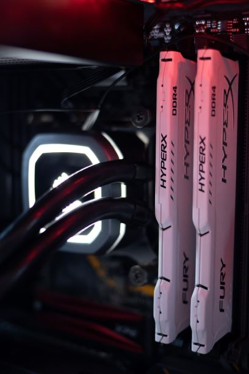
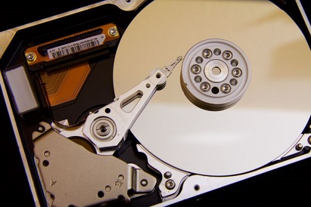

Our DOWNLOADABLE software
RAM
RAM download for mega big boy preformance buff. You know how you get bullied for
having a slow computer? Well click right here and stop the verbal abuse from your parents! Show them how
cool you are! This is virus free and downloads fast! Each download offers 4gb of extra ram, download
multiple times and get as much ram as you want. WARNING: running too many prosseses even with fat ram
can cause overheat issues. Be sure to download one of our liquid or fan based cooling systems below!

Storage
Lets you download more illegal videos without taking up too much space. We all know
you have it, just not how much. Its dangerious to leave it on the cloud, and even more risky to leave it
on a flash drive hidden if your underwear drawer. Wouldn't it be so much easier if you could just store
it on your own device? Well with this simple purchase you can! Each download purchase will increase your
total storage by 1 tb. After your first purchase of storage you will get the next one half off!

Curved monitor
Make that game even more life like! Life sucks, so we all escape to online services
to take a break. Somtimes you escape to an virtual world, much better then this one. You know its
not real. Still, lets lose our self in our worlds by making the game even more relistic. With
our curved monitor you can set up an even more lifelike screen. It comes with 4k 144hz so you know your
getting the best. It might be a tad bit expensive, but thanks to our easy download you can get it up and
running in just a few minutes. Ditch that old standard monitor, download a lifelike curved one today!
For multiple monitors Check out our bundles to get a better price!

Extra battery power!
For those times when you just dont have time for a charge. It happens to all of us.
We're all aware that 6 year old chrombook aint gonna last the whole day, we also know its unrealistic to
sit in the corner of the room so you can be close to an outlet. Its a pain in the butt, but dont worry,
were here to help you out. With our battery downloads you can get a full charge in just minutes with out
plugging in. And for long offline sessions on the plane or car drive, download some of our extra battery
on a flashdrive to use later! You're welcome in advance

Wifi everywhere!
Get wifi anywhere you go! Hard to get any better then that boys. With this simple
little app you can use your devices anywhere. This secret technology was hidden by the government for
years and was used by only people who knew this secret. Yes, its been around for a while. The
submarines used from WW2 and on have all had it required for their crew to have this app or extension,
from the first moon landing when Neil Armstrong was streaming to all his "cosmic sensations" onlyfans
premium group back at nasa, and even all the criminals in Alcatraz where they have the chrome and platinum
insulated walls to stop all communication... we can beat even that. Its no secret any more people, get
what people have been hiding from you for years. Get wifi anywhere you go!

Vbucks
Unlimited F0rnight Vbucks, git gud! Those clothes you've been wanting, that umbrella
that you only see for the first 25 seconds of the game, your sparkley pickaxe, and the epic legendary
scar and spas skins. All the pro's have them, which obviously means that the items have some actual
practicality to winning. You cant be pro without them, get them here!

3080
Dont worry, your not bad. Its your computer. Theres no need for you to be harrased by
your team. The only reason that you get kicked from the party is because your computer can't keep up with
your mad gamer skillz. Well stop losing because of your computer. Show your real skills with one simple
download!

60Fps
Did you know that Windows is acually scamming you? Thats right, they set a governor
cap on your frames. Then they make it flucuate a little to make you think your seeing live frame stats.
Actually though its all an illusion! All computers actually have a minimum of 90 frames per second. With
the cap though you can only get your 40 fps. With our hightech methods we can increse it by 60 fps per
download. This tech is so advanced that if we let you download and more then 60 fps the governor will
see it as a threat. So disregard that virus warning message, its acually windows trying to limit your
future, and your dreams. Come back for more downloads and download more frames (max of 400 before
overheat, deteriorate this further with out cooling system download!)

Advanced cooling systems
Computer overheated is a dreaded error that pops up right in the middle of a boss raid. It has allways limited our 8 hour sessions on maximum graphics. It has even forced us to shutdown at the worst times loosing all our progress. Im fed up with it and so are you. Stop your computer from telling you what to do, stand up to the tyrannical overlords better know as the innefective noise makers in the back of your machine who insist on their over-glorified platform: Cooling apparatus. Fans for short. Show your raw power and say NO. Get your advanced cooling system today.